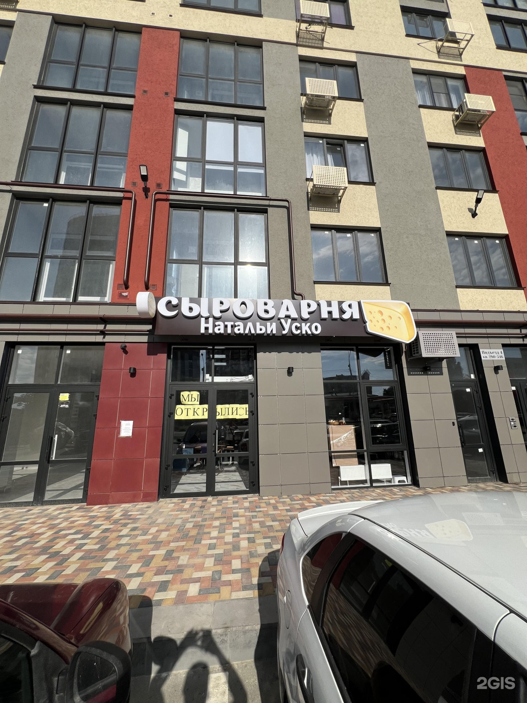

Филиал 1 — Северный обход, 11
Адрес:г. Ставрополь, ул. Северный обход, 11, 1 этаж
Район:Октябрьский, 18-й микрорайон · индекс 355035
График:ежедневно с 08:00 до 21:00
Рейтинг в 2ГИС:4.8 (59 оценок, 57 отзывов)
Как найти:вход с улицы, первый этаж. Рядом жилой массив 18-го микрорайона.